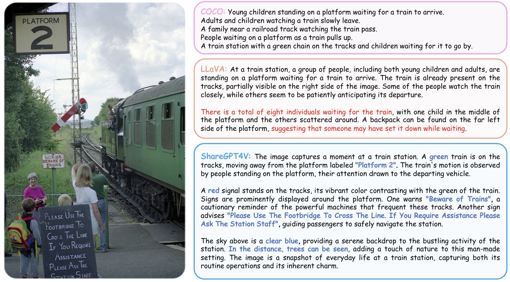
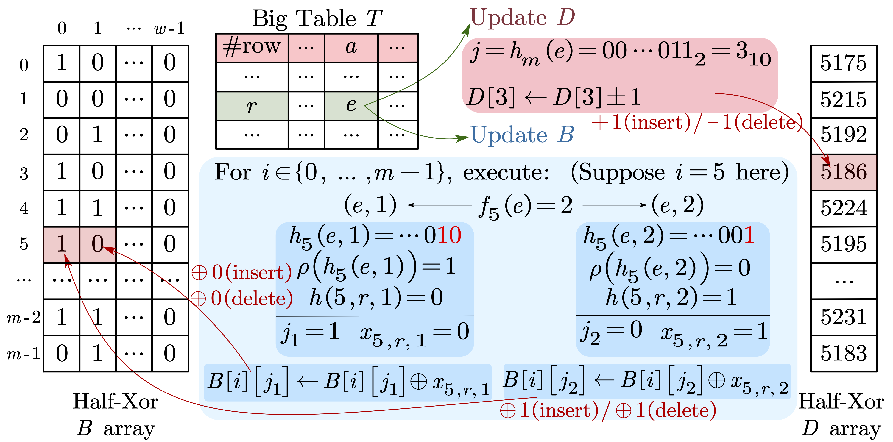

Biography
Jinsong Li (李劲松) is an Ph.D. student at Multimedia Laboratory (MMLab) of The Chinese University of Hong Kong (CUHK). Before that, He received his B.E. degree in Computer Science and Technology at Xi'an Jiaotong University (XJTU) in 2024.His research interests focus on Large Multi-modal Model.
Feel free to drop an email for any form of communication or collaboration! ü•≥
Email: lijinsong0130@gmail.com
Google Scholar Github Twitter
Education
 |
The Chinese University of Hong Kong
Aug, 2024 - present Ph.D. in Information Engineering Advisor: Prof. Dahua Lin |
 |
Xi'an Jiaotong University
Aug, 2020 - Jun, 2024 B.E. in Computer Science and Technology GPA: 3.93 (top 1.5%) |
Publications
( * equal contribution, † corresponding authors) |
Are We on the Right Way for Evaluating Large Vision-Language Models?
Lin Chen*, Jinsong Li*, Xiaoyi Dong, Pan Zhang, Yuhang Zang, Zehui Chen, Haodong Duan, Jiaqi Wang†, Yu Qiao, Dahua Lin, Feng Zhao† arXiv Preprint, 2024 | Paper | Project Page |
|  |
ShareGPT4V: Improving Large Multi-modal Models with Better Captions
Lin Chen*, Jinsong Li*, Xiaoyi Dong, Pan Zhang, Conghui He, Jiaqi Wang, Feng Zhao†, Dahua Lin† arXiv Preprint, 2023 | Paper | Project Page |
|  |
Half-Xor: A Fully-Dynamic Sketch for Estimating the Number of Distinct Values in Big Tables
Pinghui Wang†, Dongdong Xie, Junzhou Zhao, Jinsong Li, Zhicheng Li, Rundong Li, Yang Ren IEEE Transactions on Knowledge and Data Engineering (TKDE) 2023 | Paper |
Awards
| ◆ Outstanding Graduate, XJTU | 2024 |
| ◆ Person of the Year(5 out of 2233), Nanyang College of XJTU | 2023 |
| ◆ Undergraduate Academic Scholarship, XJTU | 2023 |
| ◆ Outstanding Student Award × 2, XJTU | 2021, 2023 |
| ◆ National Scholarship × 2, MOE of PRC | 2021, 2022 |
| ◆ National 1st Prize, RoboCup China Open | 2022 |
| ◆ Outstanding Student Leader Award, XJTU | 2022 |
Internships
 |
Shanghai Artificial Intelligence Laboratory
Aug, 2023 - present Large Multi-modal Model Research Intern Supervised by Dr. Jiaqi Wang |
 |
Huawei Technologies Co., Ltd.
Jul, 2023 - Aug, 2023 Software Engineer Intern |
|
Baidu Inc.
Dec, 2021 - Dec, 2022 Baidu AI Elite Class Member |
Services
| ◆ The Class President, XJTU | Aug, 2021 - Jun, 2024 |
| ◆ The Student Representative, Wenzhi College of XJTU | Nov, 2020 - Jun, 2021 |